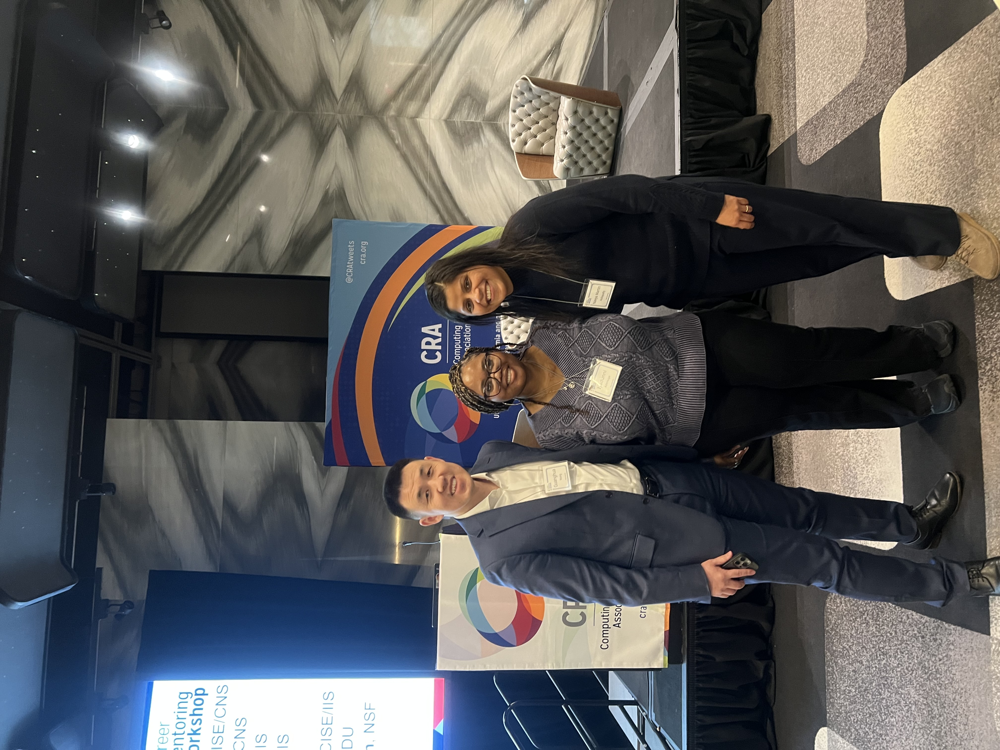

Welcome
I am an Assistant Professor specializing in ethical AI, clinical informatics, and ontology development. My research integrates Natural Language Processing (NLP) with ontology reasoning to promote fairness, transparency, and responsible AI in health and education systems.
Recent News & Updates
Recent News & Updates
-

🎓 Attending the CRA Workshop (Computing Research Association) to engage with the broader computing research community and explore opportunities for collaboration.
- 📝 Sarah’s paper accepted at the Eleventh International Congress on Information and Communication Technology (ICICT).
- 🧠 Paper accepted to IEEE BIBM 2025.
- 🏆 Attending Edison Patent Award Ceremony on November 20.
- 🏆 Sarah, Jassiris, and Ricardo attended GMIS in October 2025.